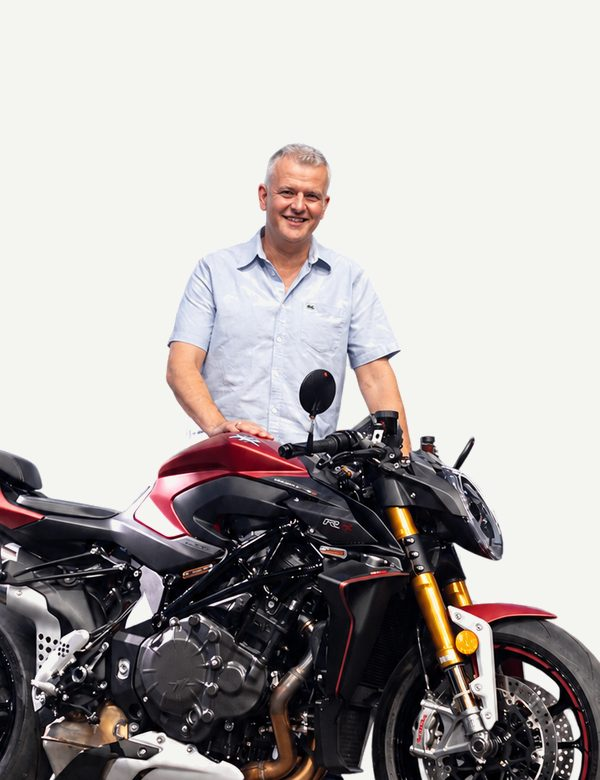
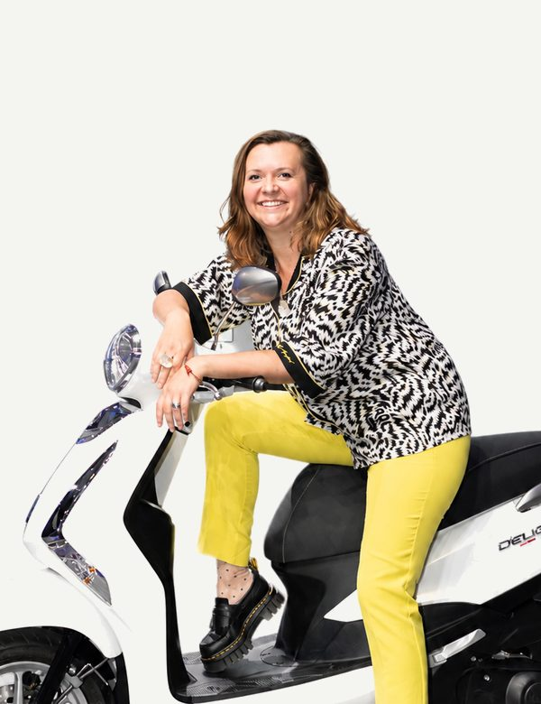
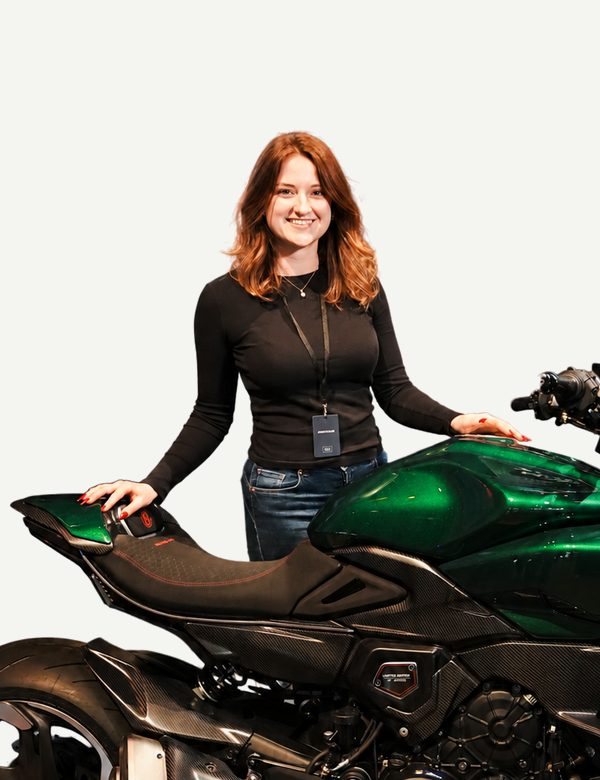

Yves Vollenweider
Managing director & co-founder
As managing director of Creox GmbH, Yves brings together 30+ years across the motorcycle, trade
A compact core team that actually delivers projects – with experience across events, marketing and technology, and a network of specialists.

As managing director of Creox GmbH, Yves brings together 30+ years across the motorcycle, trade

As co

Jasmine comes from hospitality and is the youngest on the team – bringing fresh energy and new ideas. With a completed additional qualification as an event manager and her strongly service
in marketing, content, design and engineering. Eight people in total.